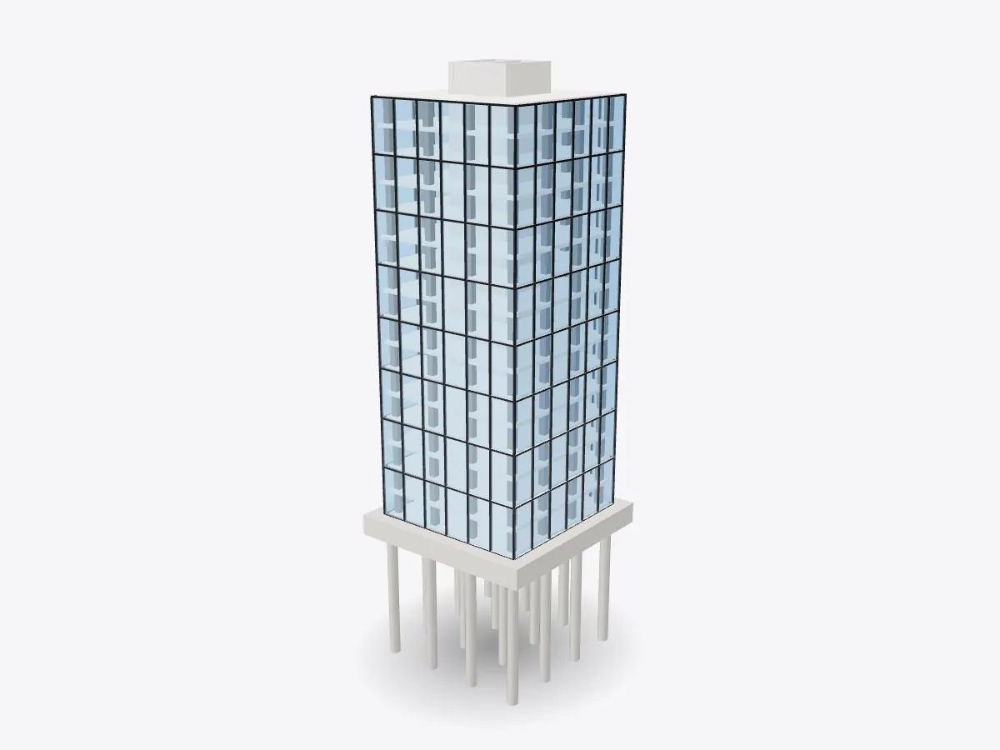

01 / 05
Overview
6 parts, one idea.
See how a skyscraper stands up in 3D: concrete core, columns, floor plates, curtain wall, elevators and foundation piles. Slice it floor by floor.
Drag to orbit, pinch or scroll to zoom, tap any part.
How it works · Buildings
Tall buildings fight two enemies: their own weight pressing down and the wind pushing sideways. Every part of a tower answers one or the other.

Scores are saved on this device only.
01 / 05
Overview
See how a skyscraper stands up in 3D: concrete core, columns, floor plates, curtain wall, elevators and foundation piles. Slice it floor by floor.
Drag to orbit, pinch or scroll to zoom, tap any part.
02 / 05
Explode
Keep scrolling and every part slides away from the centre, so you can see how they fit together.
03 / 05
Slice
A section plane sweeps through the model as you scroll. Pick an axis and set the depth yourself.
04 / 05
Parts
Pick a part or tap a glowing dot. It lights up and everything else fades back.
05 / 05
Facts
Dubai's Burj Khalifa has been the world's tallest building since it opened in 2010.
Chicago's Home Insurance Building is often called the first skyscraper, thanks to its metal frame.
Elisha Otis's safety brake made passenger lifts, and so tall buildings, practical.
Explained
A skyscraper has to solve two problems at once. The first is gravity: every floor, every person and every desk has to be carried down to the ground. The second is wind, which pushes on the side of a tall building with surprising force and tries to bend it like a tree. In most modern towers these jobs are shared between a stiff central core and a ring of columns around the edge.
The core is a reinforced-concrete tube that runs the full height of the building. It holds the lift shafts, stairs and the risers that carry water, power and air up the tower, and because it's a closed tube it's very stiff against bending. The columns around the perimeter carry the floors' weight straight down. Lower columns support every floor above them, so they're often bigger than the ones near the top. The floor plates, concrete slabs often poured onto ribbed steel decking, span between the core and the columns and tie them together, so the whole frame acts as one.
The glass you see on the outside isn't holding anything up. It's a curtain wall: a lightweight grid of aluminium mullions and glass panels hung from the edge of each floor slab. It carries only its own weight and the wind load on it, and passes both back to the structure. Separating the skin from the structure is what allows towers to be wrapped in glass, and it lets the panels be made in a factory and lifted into place.
Tall buildings only became practical with safe passenger lifts. In 1854 Elisha Otis demonstrated a safety brake that stopped a falling platform if the rope broke, and traction lifts with counterweights followed. In the model two lift cars run up and down inside the core.
All of that weight has to go somewhere. Near the surface the soil is often too soft to carry a tower, so long concrete piles are driven or drilled down to firmer ground or rock. A thick concrete raft, or pile cap, on top spreads the load between them. Chicago's 1885 Home Insurance Building is often called the first skyscraper because of its load-bearing metal frame. Today Dubai's Burj Khalifa, 828 metres tall, has held the record since 2010, using the same basic ideas at enormous scale.
D3DDD
D3DDD makes them: product cutaways, exploded views, architectural renders and technical drawings.